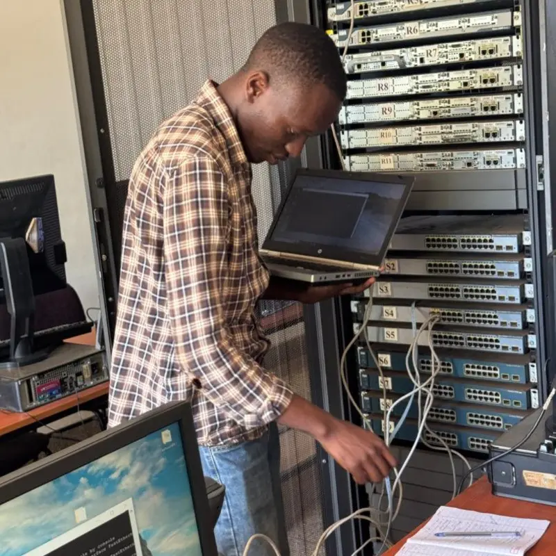
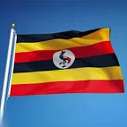

Edwin Kambale
About Me
My name is Edwin Kambale and i go by Kambale. I live in Uganda, the Pearl of Africa. I am passionate about web development, hiking, and exploring Uganda’s natural beauty. I currently work as a [Your Profession] and enjoy learning new technologies. In my free time, I love visiting national parks and experiencing Uganda’s diverse cultures.
Uganda
Uganda is a landlocked country in East Africa, known for its stunning landscapes, including the Rwenzori Mountains, Lake Victoria, and the source of the Nile River. It is home to over 50% of the world's remaining mountain gorillas and boasts incredible biodiversity, with 10% of the world's bird species. Uganda is also famous for its friendly people, rich culture, and delicious local dishes like matooke and rolex.
